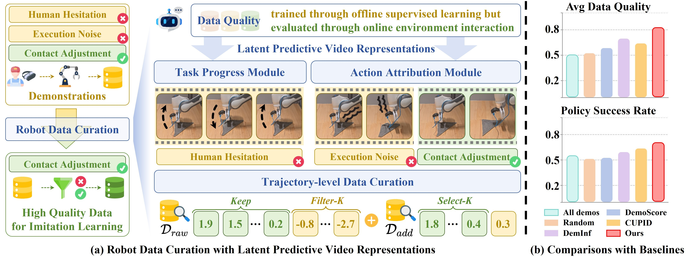
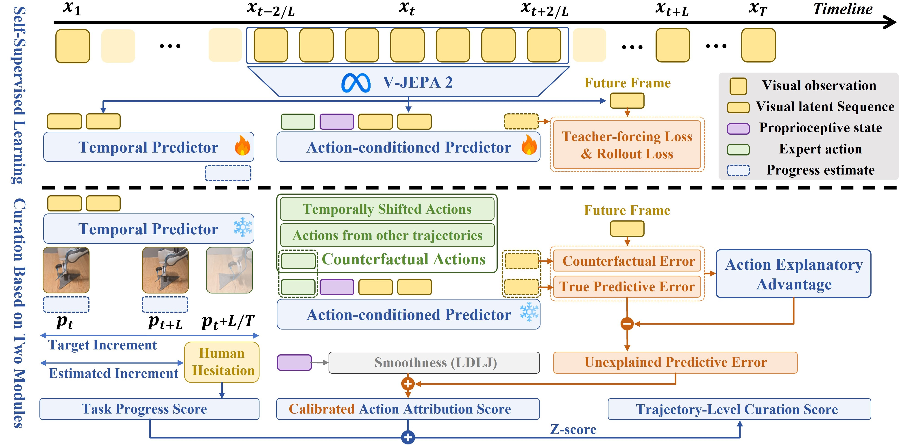

Illustration of LatentCURE. (a) LatentCURE constructs a self-supervised data curation framework for robot imitation learning, enabling rollout-free quality estimation. (b) LatentCURE outperforms baselines in data quality and policy success rate.
Imitation learning improves robotic manipulation by utilizing diverse behaviors from demonstrations. However, large-scale datasets inevitably introduce heterogeneity into the action distribution, making data curation essential to efficiently estimate data quality and retain beneficial demonstrations. Existing methods either rely on statistics-based proxies whose closed-loop effects remain unobservable or require costly rollouts with policy-dependent bias. This letter presents LatentCURE, a self-supervised data curation framework built on latent predictive video representations. LatentCURE converts latent representations of demonstrations into computable indicators and introduces two complementary modules: (1) a task progress module that identifies actions with insufficient forward progression, and (2) an action attribution module that identifies actions whose irregularities are unexplained by task-driven state transitions. The two modules produce quality estimates and trajectory-level scores for data curation. Simulation and real-world experiments show that LatentCURE improves average data quality by 21% and downstream policy performance by 14% over state-of-the-art baselines.

The pipeline estimates task progress score and action attribution score from robot demonstrations, then aggregates segment-level scores into trajectory-level scores for Filter-K and Select-K data curation.
We evaluate LatentCURE on three real-world robot manipulation tasks (Sort Blocks, Assemble Gears, and Fold Cloth). Each task compares a policy trained with all demonstrations against a policy trained after LatentCURE curation under Filter-50% and Select-50% settings.